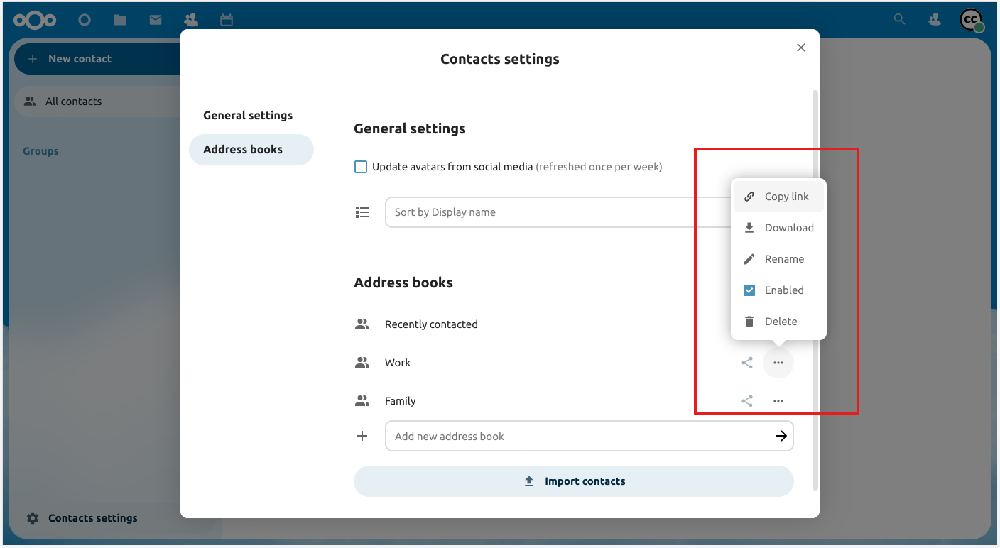

Gebruik van de contactpersonen-app
De contacpersonen-app is niet standaard ingeschakeld in Nextcloud latest en moet apart vanuit de App Store worden geïnstalleerd.
De Nextcloud Contactpersonen-app is vergelijjkbaar met andere mobiele contactpersonen-applicaties, maar met meer functionaliteit. Hier volgt een overzicht van basismogelijkheden die zullen helpen het adresboek in de applicatie te onderhouden.
Hieronder volgt een instructie hoe contacpersonen worden toegevoegd, gewijzigd of verwijderd, hoe een afbeelding aan een contactpersoon toe te voegen en het beheren van de adresboeken.
Contactpersonen Toevoegen
Als de contactpersonen-app voor het eerst wordt geopend, bevat het systeemadresboek alle gebruikers die zichtbaar zijn gemaakt, en een leeg standaard adresboek wordt beschikbaar:

Standaard Adresboek (leeg)
Om contactpersonen aan het adresboek toe te voegen zijn de volgende methodes beschikbaar:
Importeer contactpersonen via een Virtual Contact File (VCF/vCard) bestand
Voeg contactpersonen handmatig toe
De snelste manier om een contactpersoon toe te voegen is het gebruik van een Virtual Contact File (VCF/vCard) bestand.
Importeren van Virtuele Contactpersonen
Om contactpersonen te importeren via een Virtual Contact File (VCF/vCard) bestand:
Linksboven in het scherm staat een “Importeren Contactpersonen”-knop, die enkel verschijnt als er nog geen contactpersonen bestaan.
“Instellingen” bevindt zich linksonder op het scherm, naast het tandwiel-icoon.

Klik op het tandwiel. De import knop van de contactpersonen app zal verschijnen:

Notitie
De Nextcloud Contactpersonen-app ondersteund imports met vCards versie 3.0 en 4.0
Klik op “importeer Contactpersoonen” en selecteer het VCF of vCard bestand om te uploaden.
De geïmporteerde contacten verschijnen in het adresboek
Voeg contacten handmatig toe
Als het niet lukt om contacten te importeren kun je contacten handmatig toevoegen met de knop “Nieuwe contactpersoon”
Om een nieuw contact te maken:
Klik op de knop “Nieuwe contactpersoon”
De Wijzig Beeld configuratie opent binnen het Applicatie Beeld veld:

Voer de nieuwe contactgegevens in en klok op “Opslaan”
In de het overzicht zie je de gegevens die zijn toegevoegd

Wijzig of verwijder contactinformatie
Met de Contacten App kun je contactgegevens toevoegen, wijzigen of verwijderen.
Om contactinformatie te wijzigen of verwijderen
Zoek of selecteer de contactpersoon die je wilt wijzigen.
Selecteer de informatie in het veld dat je wilt wijzigen of verwijderen
Voer de wijziging in of verwijder het item door op het prullenbak icoon te klikken
Wijzigingen of verwijderingen aan elk deel van de contactpersoon-informatie wordt onmiddellijk toegepast.
Niet alle contacten zullen wijzigbaar zijn. Het systeem-adresboek staat niet toe dat andermans gegevens worden gewijzigd, enkel de eigen. Eigen gegevens kunnen ook worden gewijzigd in de doc:gebruikersinstellingen <../userpreferences>.
Contact afbeelding
Klik op de upload-knop om een afbeelding voor de nieuwe contacten toe te voegen:

Nadat je de afbeelding hebt geconfigureerd ziet het er zo uit:

Klik op de contact-afbeelding om een nieuwe te uploaden, te verwijderen, volledig te zien of te downloaden. De volgende opties verschijnen:

Managing multiple Contacts at a time
The Contacts app enables you to select multiple contacts and to perform batch actions on them. To select multiple contacts, either click on each contacts profile picture individually, or click on the profile picture on the first contact then while holding the shift key click on another contact in the list to select all contacts in between the first and second one.
This will bring up a menu at the top of the contacts list with various actions you can perform on the selected contacts:

In batch mode, the cross icon button will unselect all selected contacts, while the trash bin icon button will delete all selected contacts.
Notitie
You might not be able to modify or delete certain contacts, for example if they are in a read-only address book. In that case, relevant actions will be disabled.
Merging duplicate Contacts
To merge contacts, select two contacts then click the “Merge contacts” icon button at the top of the contacts list, this will open a dialog that helps you merge duplicate contacts. The merging dialog will show the details of both contacts side by side, and you can choose which details to keep in the merged contact.
Any properties with a Radio (circular) button can only have one value, so one of the two values must be selected (like the name of the contact, which can only have one value), meanwhile checkboxes (square buttons) allow you to keep both values if desired (like phone numbers or email addresses, which can have multiple values).
If either of the contacts are part of a group(s), by default the merged contact will be part of all groups that the two contacts were part of. You can uncheck any groups while merging if you don’t want the merged contact to be part of them.
Notitie
Currently you are only able to merge two contacts at a time, and you are naturally only able to merge contacts that can be modified by you. If the merging action is disabled, check that you selected contacts that match those conditions.
Organiseer contacten in groepen
Contactgroepen helpen door contactpersonen in groepen te organiseren.
Klik op het plus-symbool naast “Contactgroepen” in de linker zijbalk om een nieuwe contactgroep toe te voegen.
Notitie
Contactgroepen moeten tenminste een lid hebben om te kunnen worden opgeslagen. Let op: alleen contacten vanuit wijzigbare adresboeken kunnen aan contactgroepen worden toegevoegd. Contacten uit alleen-lezen adresboeken, zoals het systeem adresboek, kunnen niet worden toegevoegd.
Toevoegen en Beheren Adresboeken
Klik op het “Instellingen” tandwiel onderaan de linker zijbalk om toegang te krijgen tot de instellingen van de Contact app. Dit veld toont alle beschikbare adresboeken, bepaalde opties per adresboek, en staat toe om nieuwe adresboeken te maken door eenvoudigweg een adresboeknaam te specificeren:

Contact-instellingen is ook waar adresboeken kunnen worden gedeeld, geëxporteerd en verwijderd. Hier bevinden zich ook de CardDAV URLs.
Notitie
Contacten in uitgeschakelde adresboeken zullen niet worden getoond in de Contactpersonen app en het Contact menu.
Zie Groupware voor meer details omtrent het synchroniseren van de adresboeken met iOS, macOS, Thunderbird en andere CardDAV-software.
Teams
Binnen een organisatie bestaat informele samenwerken: een te organiseren gebeurtenis voor een paar weken, een korte sessie tussen leden van verschillende disciplines, workshops, een plek voor grapjes en om teambuilding te faciliteren, of, in organische organisaties waar formele structuren tot een minimum beperkt zijn.
Voor al deze redenen ondersteunt Nextcloud Teams, een optie die in de Contacten app is ingebouwd. Elke gebruiker is in staat een eigen team te creëeren; een collectie van accounts. Teams kan later worden gebruikt om bestanden en mappen te delen en, als een reguliere groep, ook aan Talk conversaties worden toegevoegd.

Maak een team aan
Klik in het linker menu op de + naast Teams. Stel een team naam in. Aangekomen op het team configuratiescherm kun je:
Voeg teamleden toe
klik op het drie-puntenmenu naast een gebruiker om diens rol binnen het team te wijzigen.
Team rollen
Teams kent 4 soorten rollen:
Teamlid
Moderator
de beheerder kan team opties en moderator permissies configureren
Eigenaar
Teamlid
Lid is de rol met de minste rechten. Een lid kan alleen de bronnen benaderen die met het team zijn gedeeld, en de leden van het team zien.
Moderator
Naast lid-rechten kan een moderator anderen uitnodigen, uitnodigingen bevestigen en de leden van een team beheren.
Admin
Naast moderator-rechten kan een admin team-opties configureren.
Eigenaar
Naast admin-rechten kan een eigenaar het eigenaarschap overgeven naar een ander lid van het team. Er kan maar een eigenaar van een team zijn.
Voeg leden toe aan een team
Locale accounts, groepen, emailaddressen of andere teams kunnen als lid aan een team worden toegevoegd. Voor een groep of een team gelden de rechten van een rol voor alle leden van de groep of het team.
Team opties
Verschillende opties, die zichzelf verklaren, zijn beschikbaar om een team te configureren, lidmaatschappen en uitnodigingen te beheren, zichtbaarheid van het team in te stellen, toestaan van lidmaatschap van een ander team en wachtwoordbeveiliging.
Gedeelde items
Added in version 5.5.

Items die gedeeld worden tussen twee contacten worden getoond in de Contacten app. Dit omvat ook media, agendagebeurtenissen en gedeelde deck-kaarten. Dit alles is zichtbaar in de Contact-details. Deze functionalteit is beperkt tot contact in het systeem adresboek. Momenteel ondersteunt het systeem alleen gedeelde items tussen tween contacten.